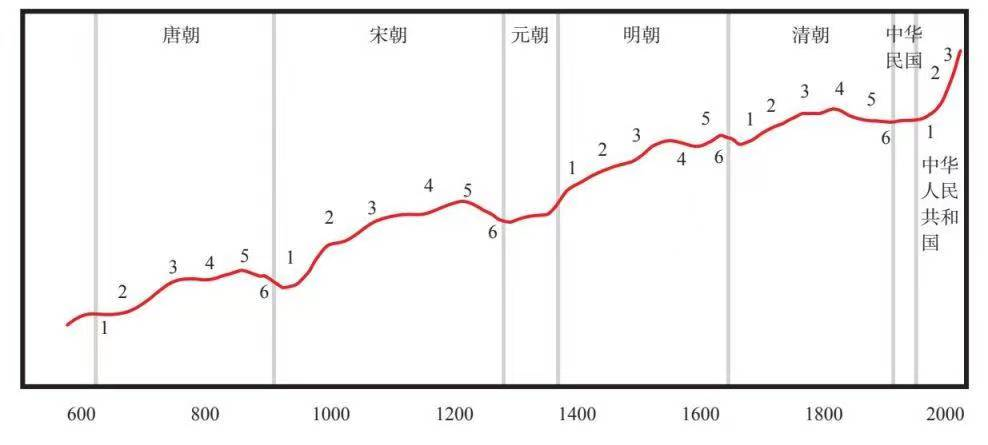
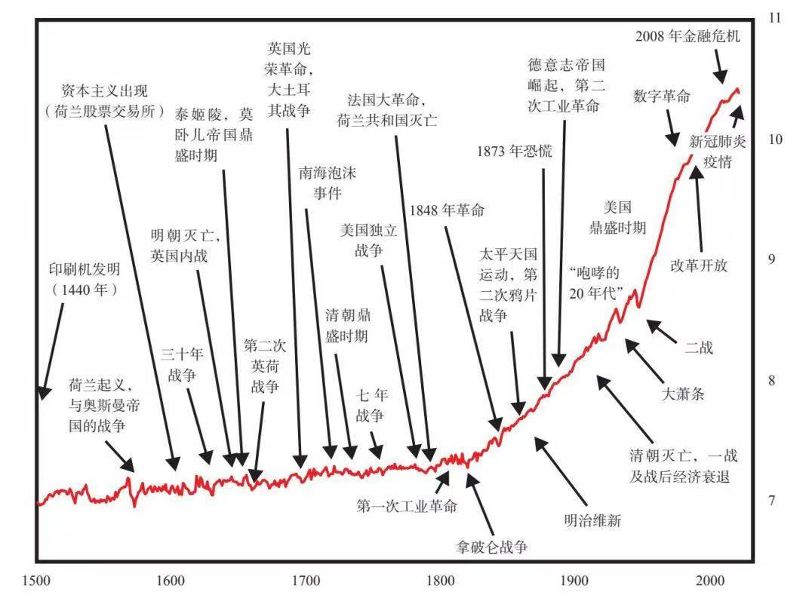

认知 015
认知之旅 day21
同步读书：《三千年文化大变局》许倬云
【长周期认知补充（三）】
今日内容简介：
- 内部秩序与混乱周期的六个阶段
1.新秩序开始，新领导层巩固权力
2.资源配置体系与政府官僚机构建立和完善
3.出现和平与繁荣
4.支出和债务严重过度，贫富差距和政治分歧扩大
5.财政状况糟糕，冲突激烈
6.出现内战/革命
然后再回到第一阶段，整个周期循环往复。今天的认知之旅主要详细介绍前两个阶段，后面四个阶段后面继续～
参考内容部分节选整合自《原则：应对变化中的世界秩序》“第五章 内部秩序和混乱大周期”。
我发现自古至今，在大多数国家，影响大多数人的最主要因素是人们如何努力创造、获取和分配财富与权力，尽管他们也在其他方面发生斗争，其中最突出的是意识形态和宗教。当这些斗争以良性竞争的形式出现，激发人们将精力用于生产性活动时，就会带来有效的内部秩序和繁荣时期；当这些精力被用于具有破坏性的内部斗争时，这就会造成内部混乱和困苦时期。生产性有序状态与破坏性无序状态之间的更迭通常发生周期性演进，而这些周期是由符合逻辑的因果关系驱动的，所有国家都以几乎相同的原因发生更迭演进。
内部周期的6个阶段（简述）
研究历史使我发现，从内部有序到内部无序再回到内部有序的典型周期分为以下阶段：
• 第一阶段：新秩序开始，新领导层巩固权力，接下来……
• 第二阶段：资源配置体系与政府官僚机构建立和完善，如果行之有效，就会……
• 第三阶段：出现和平与繁荣，进而出现……
• 第四阶段：支出和债务严重过度，贫富差距和政治分歧扩大，从而导致……
• 第五阶段：财政状况糟糕，冲突激烈，之后……
• 第六阶段：出现内战/革命，然后再回到……
• 第一阶段：发展到第二阶段，以此类推，整个周期循环往复。
每个阶段都呈现出一组不同的情况，身处其中的人们必须加以应对。一些情况比另一些情况更为棘手。例如，在长期债务周期的初期，政府有充足的能力创造债务，为支出提供资金，因此比较容易处理当下情况；到了长期债务周期的后期，政府几乎无法创造货币和信贷，难以为支出融资，就不容易处理当下情况了。因此，领导者可能采取的措施和面临的挑战取决于这个国家在周期中所处的阶段。不同的阶段展现出不同的挑战。要想有效地应对这些挑战，领导者需要具备不同的素质、认知和技能。
自有历史记录以来（也许是更早的时候），这些周期就一直运转。许多周期连接起来，呈现出向上倾斜的演进轨迹。因为随着时间的推移，这些周期以渐进的方式发展。
为了从国家层面进行分析，我们来看看中国。下图根据我的估算数据，显示中国的绝对实力，并象征性地说明中国自大约600年以来的大周期。这是一张极其简化的图（还有更多的王朝和复杂因素），目的是从宏观角度展示这些周期的演进过程。

不同国家通常处于周期中的不同阶段，各国竞相夺取财富和全球政治权力，因此在一些国家崛起的同时，另一些国家走向衰落。全球整体的波动程度比任何单个国家都要小。换言之，各国间的区别产生了一种分散效应，这使全球的演进过程比任何单个国家都更平稳。

深入研究内部周期的6个阶段
接下来，我们更详细地研究6个典型阶段的具体情况，以便在看到这些情况时，我们可以轻松地识别国家所在的阶段，从而更好地预估接下来可能发生的情况。
第一阶段：新秩序开始，新领导层巩固权力
无论是内战还是革命（即使是和平的革命）都是一场巨大的冲突，最后，一方取胜，另一方落败，国家遭受损伤。第一阶段出现在战争之后，获胜者夺取了控制权，而失败者则必须屈服。在新秩序的第一阶段，获胜者因足够强大而获胜，其必须还有智谋，才能巩固权力并重建家园。
在赢得控制权之后，新领导者通常会清除残余的反对派，并为争夺权力展开内斗。事实上，也许可以说，革命通常分为两部分：第一部分是推翻已有领导者和体制的斗争，第二部分是消除前领导者的忠诚分子的斗争以及胜者为争夺权力而进行的内斗。我将第二部分称为“清洗”，并在本节进行简要的介绍。
在几乎所有革命之后，权力巩固/清洗这一阶段都会出现，只是清洗的形式和程度各异。这取决于以下因素：这个阶段之前的内战/革命烈度、新领导者与其反对者之间的冲突烈度、新领导者内部的冲突程度，以及新领导者继承的各种政府部门和官僚机构的发展程度。
在这个阶段，在一些国家，残余的反对派被杀害或囚禁。这样，新领导者就可以确信，他们的敌人不会卷土重来。同样在这个阶段，曾联合起来获胜的革命者会为争夺权力而展开内斗。
最糟糕的情况是，由于革命后巩固权力的争斗，国家陷入了历史上最残酷的时期，如1789年法国大革命之后的“恐怖统治”时期等。在一些情况下，这样的清洗只在革命刚刚结束后发生一次（如“恐怖统治”）；在另一些情况下，这样的清洗在几十年里有间断地发生多次。这些清洗是为了巩固政权，清除被认为是意识形态敌人和国家敌人的群体，有时比革命本身还要残酷。但如果条件允许，领导者就能够维持基本的体制，人们仍然尊重体制，就会出现最好的情况，例如1861—1865年美国内战结束之后的时期，或20世纪30年代和平的罗斯福新政时期。
在这一阶段，最有成效的领导人是“权力巩固者”。他们通常具有上个阶段获胜的革命者那样的素质，他们是顽强而机智的勇士，具有不惜一切代价取胜的能力和动机。但是，在这个阶段，他们还需要有更精明的政治头脑，因为此时的敌人远不像上个阶段那么明显。一些领导者在这个阶段表现非凡，例如唐太宗、罗马皇帝奥古斯都。还有一些近代领导者，如美国的国父、法国的拿破仑和德国的俾斯麦，他们提供了很好的例证，显示出一个国家如何有效地从战争时期过渡到重建时期。
随着新政权的确立，所有人都厌倦战争，国家完全走上了重建之路，这一阶段就结束了。
第二阶段：资源配置体系与政府官僚机构建立和完善
我也把这一阶段称为早期繁荣时期，因为这通常是和平与繁荣时期的开始。
在新领导者推翻旧秩序、巩固权力之后，或者新旧秩序交替时期，新领导者必须开始建立新的体制，从而更好地分配资源。在这一阶段，体制和机构建设最为重要。领导者需要设计和创建一个系统（秩序），使人们遵守规则和法律，朝着同一个方向努力，追求类似的目标。领导者还需要建立一个有效配置资源的系统，迅速提高生产率，使大多数人受益。即使在战败之后，国家也需要重新设计和建设，重建仍然是必不可少的工作。很多国家经历过这一阶段，包括美国在1776年宣布独立后的15年，在1799年法国大革命结束时拿破仑通过政变夺权后的拿破仑时代初期，紧随1868年日本政治革命后的明治维新初期，日本、德国及大多数国家从20世纪40年代末到20世纪50年代的战后时期，中国1949年建国后的时期，以及俄罗斯在苏联解体之后的时期。
这一阶段的一个永恒普适原则是，一个体制要想成功，就要为大多数人（特别是广大中产阶级）创造繁荣。正如亚里士多德在《政治学》里说的：“如果中产阶级规模大，那么在可能的情况下，中产阶级比另外两个阶级都强大，这样的国家可能是治理良好的国家……中产阶级规模大的地方，派别纷争出现的可能性最低……因为假如没有中产阶级，而贫困者又过多，麻烦就来了，国家会很快走向灭亡。”
这一阶段（以重建和治理为主）的成功领导者通常与第六（以革命为主）和第一阶段的迥然不同。我称这个阶段的领导者为“土木工程师”。他们必须有智慧，最好还有能力和感召力，但最重要的是，领导者（或者其下属）必须能够设计和构建一个对大多数人来说都高效的体制。这一阶段的伟大领导者包括德国的康拉德·阿登纳、新加坡的李光耀和中国的邓小平。这些领导者都是在战争后上台的，他们建立的体制为国家创造了繁荣，繁荣时期在他们去世后延续了很久。
不同阶段的成功领导者具备的素质是不一样的，二者的区别很好地反映在丘吉尔和毛泽东身上。两位领导者都是了不起的“励志将领”，但作为“土木工程师”存在不足。
最非凡的领导者能够带领国家度过第六、第一和第二阶段（即内战/革命时期、权力巩固时期、体系和机构建立时期，这些体系和机构在他们去世后很久仍然高效运作），并且在大规模层面上完成这些工作。有史以来最杰出的此类领导者或许包括唐太宗（7世纪中国唐朝的革命性缔造者之一，他使中国出现了约150年的和平与繁荣，成为当时世界上规模最大、实力最强的国家）、罗马皇帝奥古斯都（公元前27年即位的第一任罗马帝国皇帝，他开启了大约200年的和平与繁荣时期，使罗马成为当时世界上最大的帝国），以及成吉思汗（他从1206年开始建立和领导蒙古帝国，蒙古之后出现了100多年的繁荣，成为当时世界上规模最大、最强盛的帝国，尽管在他去世后不久就发生了多次内战）。
【注：这里说的奥古斯都应该是指屋大维，跟同步阅读的许老前辈的书招相呼应了一小下～】
国家重建总是按照这一次序进行，但重建规模因国而异，这取决于一个国家所需变革的规模。一些国家经历了残酷的革命之后，几乎需要重建一切；另一些国家则只需修改现有机构和体系，以适应新的领导者。